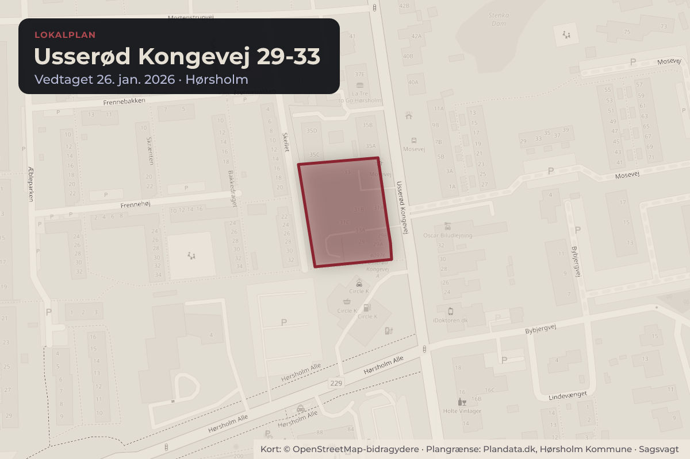
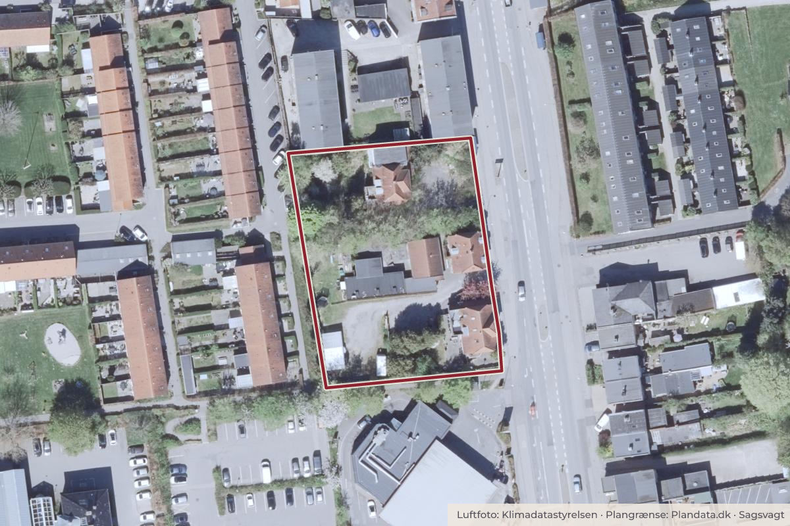

Besluttet 14. januar, Økonomiudvalget, Hørsholm
Endelig vedtagelse af Lokalplan 190 – for Usserød Kongevej 29-33
Forslag til Lokalplan 190 – for Usserød Kongevej 29-33 har været i offentlig høring i perioden fra den 4. juni 2025 til 30. juli 2025. Der er kommet 13 høringssvar. I dette dagsordenspunkt fremlægges høringssvarene samt forslag til ændring med henblik på endelig vedtagelse af lokalplanen.

Kort: © OpenStreetMap-bidragydere. Plangrænse: Plandata.dk, Hørsholm Kommune.

Har du et billede fra Usserød Kongevej 29-33? Send det til os
Kort fortalt
- Hvem
- Økonomiudvalget, Hørsholm Kommune
- Hvornår
- Onsdag 14. januar 2026
- Status
- Besluttet. Ændringsforslag fra E: Det foreslås, at byggeriet reduceres i højden, så det flugter med de to øvrige nabobygninger på Usserød Kongevej for at reducere skyggevirkningerne for naboerne på begge sider af Usserød Kongevej. Det foreslås endvidere, at der gøres mere for at begrønne byggeriet. Endelig foreslås, at der skal identificeres gæsteparkering på egen grund. Godkendt.Beslutningen er forkortet her. Læs hele beslutningen
Forkastet 2 for, 4 imod (partier)
- For 2
- Imod 4
- Undlod 0
For
Imod
Tallene viser antal partier, ikke stemmer.
Læs hele sagen Kommunens egen tekst
Baggrund
Forslag til Lokalplan 190 – for Usserød Kongevej 29-33 har været i offentlig høring i perioden
fra den 4. juni 2025 til 30. juli 2025. Der er kommet 13 høringssvar. I dette dagsordenspunkt
fremlægges høringssvarene samt forslag til ændring med henblik på endelig vedtagelse af
lokalplanen.
Forslag
Administrationen anbefaler, at Byudviklingsudvalget over for Økonomiudvalget og
Kommunalbestyrelsen indstiller, at vedtage forslag til Lokalplan 190 – for Usserød Kongevej
29-33 endeligt med følgende ændringer:
I skel mod vest skal der opsættes fast hegn, der skærmer for lys. Hegnet må maksimalt være
1,80 m. Hvis ikke den eksisterende beplantning kan bevares, skal denne erstattes.
I skel mod nord, skal der opsættes fast hegn, der skærmer for lys. Hegnet må maksimalt være
1,80 m. Hvis ikke den eksisterende beplantning kan bevares, skal denne erstattes.
c. Miljø og forurening
Kloakering og lokal håndtering af regnvand
Der vil på sigt (10-20 år) ske en ændring i kloakeringsprincip fra "fælles kloakering” til ”separat
kloakering”, hvorfor der skal separeres internt på matriklen. Planområdet har en tilladt
afløbskoefficient på 0,4. Hvis der tilledes mere regn end dette, skal der etableres intern
forsinkelse på matriklen. Planområdet skal kunne tilbageholde samme mængde ekstremregn,
som området tilbageholder i den nuværende situation.
d. §7.2 i) Der må ikke benyttes kobber eller zink i forbindelse med byggeriet.
e. Lokalplanområdet i fremtiden
Illustration af det planlagte byggeri udskiftes med en revideret version, hvor begrønningen af
kantzone og facade stemmer overens med lokalplanens bestemmelser jf. bilag 4.
Sagsfremstilling
Administrationen har modtaget 13 høringssvar, disse er vedhæftet som en hvidbog bilag 1. En
opsummering af de indkomne høringssvar samt administrationens bemærkninger er vedhæftet
som bilag 2. Forslag til Lokalplan 190 – for Usserød kongevej 29-33 er vedhæftet som bilag 3.
Høringssvarene kan kategoriseres inden for følgende temaer:
A. Trafik (7 høringssvar)
B. Parkering (4 høringssvar)
C. Skyggegener (7 høringssvar)
D. Gener vedr. vind, indblik, lys og lyd (7 høringssvar)
E. Arkitektur (8 høringssvar)
F. Nedrivning af eksisterende bebyggelse (5 høringssvar)
G. Det grønne udtryk (3 høringssvar)
H. Økonomiske konsekvenser (2 høringssvar)
I. Anlægsfasen (4 høringssvar)
J. Regnvandshåndtering (2 høringssvar)
K. Stier (2 høringssvar)
L. Dialog og kommunikation (3 høringssvar)
M. Miljøscreening (1 høringssvar)
Administrationens bemærkninger til ovenstående temaer samt forslag til ændringer følger:
A) Trafik
Høringssvar Id.nr.: 201 (flere), 203 (flere), 204, 205 (flere), 206, 207, 208 (Høringssvar fra 7
afsendere.)
Høringssvar: Bekymring vedr. øget trafik, ændrede trafikmønstre og fremtidig trafikløsning.
Særligt fokus på trafiksituationen omkring Mosevej. Ønske om lyskryds, fodgængerovergang
og visuel dokumentation.
Administrationens bemærkninger: Trafikanalysen viser begrænset stigning (0,5%). Svingbaner
justeres uden for lokalplanområdet og behandles i udbygningsaftale. Trafikafviklingen vurderes
som acceptabel, da problematikkerne rejst i processen samt i de modtagne høringssvar er
belyst. Samtidig tages det med i betragtningen, at området ligger centralt i Hørsholm by og der
må forventes nogen grad af trafik. Indsigelser vedr. svingbanen i midterbanen har ledt til en
ændret dimensionering og ændrede vejstriber, som sikrer til- og frakørsel til svingbanen. Dette
leder til en ændring i bilaget vedr. udbygningsaftalen, da arealet ligger uden for
lokalplanområdet og derfor ikke kan reguleres i lokalplanen.
B) Parkering
Høringssvar Id.nr.: 199, 203 (flere), 205 (flere), 207 (Høringssvar fra 4 afsendere.)
Høringssvar: Parkeringsnormen vurderes som utilstrækkelig. Risiko for pres og konflikter.
Forslag om parkeringskælder.
Administrationens bemærkninger: Normen følger kommuneplanen og vurderes tilstrækkelig,
bl.a. pga. central beliggenhed og adgang til kollektiv trafik. Administrationen vurderer, at
høringssvarene ikke bør give anledning til ændringer af lokalplanforslaget.
C) Skyggepåvirkning
Høringssvar Id.nr.: 199, 201 (flere), 203 (flere), 205 (flere), 206, 207, 208 (7 høringssvar)
Høringssvar: Flere borgere udtrykker bekymring for skyggepåvirkning af haver, fællesarealer
og boliger, særligt mod øst og vest. Der ønskes skyggeanalyse, beregning af tabte soltimer og
reduktion af byggehøjde. Kritik af placering på højeste punkt og forslag om ændret byggehøjde
mod nord.
Administrationens bemærkninger: Projektet overholder kommuneplanens rammer for højde og
bebyggelsesprocent. Skyggediagrammer viser, at påvirkningen er begrænset og primært
forekommer i vinterhalvåret og sen eftermiddag. Afstande til nabobebyggelse og bygningens
orientering vurderes at minimere gener. Administrationen vurderer, at skyggepåvirkningen er
tilstrækkeligt belyst og forholdende er acceptable. Administrationen vurderer, at
høringssvarene ikke bør give anledning til ændringer af lokalplanforslaget.
D) Gener vedr. vind, indblik, lys og lyd
Høringssvar Id.nr.: 199, 201 (flere), 203 (flere), 205 (flere), 206, 207, 208 (7 høringssvar)
Høringssvar: Bekymring for indblik fra altaner og tagterrasser. Ønske om afskærmning og
hegn. Referencer til gener fra andet byggeri. Bekymring for turbulens i gårdrum.
Administrationens bemærkninger: Afstande til nabobebyggelse (30–45 m) og terrænfald
vurderes som formildende omstændigheder vedr. Indbliks-, lys- og lydgener. Der er ingen krav
til vindanalyse jf. planloven eller BR18. Der anbefales ikke udarbejdelse af vindanalyser ved
byggeri under 5-6 etager.
Forslag til ændringer i lokalplanen: Der tilføjes bestemmelser vedr. hegn mod Frennegård Park
og Rosengården samt bevaring af beplantning jf. Pkt. A og b.
E) Arkitektur
Høringssvar Id.nr.: 197, 198 (institution), 199, 201 (flere), 203 (flere), 205 (flere), 206, 207 (8
høringssvar)
Høringssvar: Ønske om arkitektur i harmoni med omgivelserne (røde/gule tegl). Kritik af
materialevalg og højde. Ønske om butikker.
Administrationens bemærkninger: Projektet tilpasser sig eksisterende arkitektur med gule tegl
og røde detaljer. Ny arkitektur kan tilføre området andre kvaliteter samtidig med, at det
indpasses i den overordnede kontekst. Butikker er ikke inkluderet, da kommuneplanen
fokuserer på boliger og centralisering af detailhandel. Administrationen vurderer, at
høringssvarene ikke bør give anledning til ændringer af lokalplanforslaget.
F) Nedrivning af eksisterende bebyggelse
Høringssvar Id.nr.: 198, 199, 203 (flere), 205 (flere), 207 (5 høringssvar)
Høringssvar: Ønske om bevaring af eksisterende bygninger og bygningsmiljø.
Administrationens bemærkninger: Området er ikke udpeget som kulturmiljø, og bygningerne er
ikke fredede eller bevaringsværdige. Kommunen kan derfor ikke forhindre nedrivning. Det er
meget få steder i Hørsholm Kommune, der er udpeget til fortætning/byudvikling, derfor vurdere
administrationen, at der her kan ske en udvikling og fortætning med fokus på en tilpasning til
området samt ved krav om kvalitet i det kommende byggeri. Administrationen vurderer, at
høringssvarene ikke bør give anledning til ændringer af lokalplanforslaget.
G) Det grønne udtryk
Høringssvar Id.nr.: 201 (flere), 203 (flere) 207 (3 høringssvar)
Høringssvar: Ønske om styrket grønt udtryk og større grønne arealer mod Usserød Kongevej.
Administrationens bemærkninger: Lokalplanen indeholder bestemmelser om grøn kantzone
med beplantning med henblik på at opretholde et grønt udtryk og skabe overgang fra offentligt
til privat rum. Tilbagerykning af byggelinje vurderes uhensigtsmæssig ud fra et samlet
perspektiv, idet det vil medføre en øget skygge for naboejendommen mod nord og reducere
det private haverum og parkeringsareal for kommende boliger. Administrationen vurderer, at
høringssvarene ikke bør give anledning til ændringer af lokalplanforslaget.
H) Økonomiske konsekvenser
Høringssvar Id.nr.: 205 (flere), 207 (2 høringssvar)
Høringssvar: Bekymring for værdiforringelse af omkringliggende ejendomme pga. skygge og
begrænset udsigt. Ønske om vurdering af tabt reklameindtægt fra gavl på Rosengården.
Administrationens bemærkninger: Administrationen vurderer, at der ikke er grundlag for
erstatning. Lokalplanlægning er som udgangspunkt erstatningsfri regulering, medmindre
ganske særlige omstændigheder foreligger, hvilket ikke er tilfældet her, idet ejendommene
fortsat kan anvendes økonomisk forsvarligt. Der er derfor ikke hjemmel til kompensation.
Administrationen vurderer, at høringssvarene ikke bør give anledning til ændringer af
lokalplanforslaget.
I) Anlægsfasen
Høringssvar Id.nr.: Id: 196, 201 (flere), 203 (flere), 205 (flere) (4 høringssvar)
Høringssvar: Bekymring for støj, støv, vibrationer og trafik. Ønske om sanktionsmuligheder og
beskyttelse af naboarealer.
Administrationens bemærkninger: Afværgeforanstaltninger i forbindelse med anlægsfasen er
planlagt af bygherre.
Byggelovens §12 regulerer skader, men er et forhold mellem involverede parter.
Kommunikation og kontaktperson faciliteres af bygherre. Administrationen vurderer, at
høringssvarene ikke bør give anledning til ændringer af lokalplanforslaget.
J) Regnvandshåndtering
Høringssvar Id.nr.: 200, 202 (2 høringssvar)
Høringssvar: Ønske om vandhåndteringsplan, afløbskoefficient, og forbud mod zink/kobber.
Administrationens bemærkninger: Regnvandshåndteringsplan er udarbejdet. Det vurderes at
projektet kan realiseres og overholde gældende krav til håndtering af regnvand.
Forslag til ændringer i lokalplanen: krav om intern forsinkelse, separat kloakering og forbud
mod zink/kobber jf. pkt. c og d.
K) Stier
Høringssvar Id.nr.: 199, 201 (flere) (2 høringssvar)
Ønske om at undgå adgang til private områder og Frennegård Park.
Administrationens bemærkninger: Der etableres igen adgang/forbindelser fra Skellet eller
Frennegård Park til Usserød Kongevej 29-33 – hverken permanent eller midlertidigt.
Administrationen vurderer, at høringssvarene ikke bør give anledning til ændringer af
lokalplanforslaget.
L) Dialog og kommunikation
Høringssvar Id.nr.: 201 (flere), 205 (flere), 207 (3 høringssvar)
Høringssvar: Kritik af manglende inddragelse. Ønske om bedre kommunikation og
borgermøder.
Administrationens bemærkninger: Høringsperiode er afholdt fra den 4. juni 2025 til 30. juli 2025
med et borgermøde 16. Juni. Kommunen vil arbejde på at forbedre kommunikation ved
kommende lokalplanproces. Administrationen vurderer, at høringssvarene ikke bør give
anledning til ændringer af lokalplanforslaget.
M) Miljøscreening
Høringssvar Id.nr.: 207 (1 høringssvar)
Høringssvar: Spørgsmål om fravær af miljøvurdering og adgang til screening.
Administrationens bemærkninger: Miljøscreening gennemført – ingen væsentlige påvirkninger
og derfor ingen miljørapport. Lokalplanen muliggør nybyggeri i form af en
etageboligbebyggelse i 3,5 etager samt parkering og haverum. Der er i afgørelsen lagt vægt
på, at projektet omfatter en mindre byomdannelse af lokal karakter, der tilpasses skalaen i
området. . Afgørelse offentliggøres med lokalplanen. Opdateret screening af anlægsfasen
bekræfter samme konklusion. Administrationen vurderer, at høringssvarene ikke bør give
anledning til ændringer af lokalplanforslaget.
Opdateret miljøscreening af forslag til Lokalplan 190
Administrationen har på baggrund af et høringssvar og efter den offentlige høring igangsat en
opdateret miljøscreening af Forslag til Lokalplan 190, hvor anlægsfasens påvirkning af
trafikken i og omkring projektet er blevet screenet. Miljøscreeningen har fulgt samme
procedure, som første del af screeningen og har således været i høring hos interne og
eksterne myndigheder. Den opdaterede miljøscreening af Forslag til Lokalplan 190 for Usserød
Kongevej 29-33 gav ikke anledning til udarbejdelse af en miljøvurderingsrapport. Afgørelsen
vedr. miljøscreening offentliggøres i forbindelse med den endelige vedtagelse af Lokalplan
Opsamling på høringssvar
Administrationen vurderer, at lokalplanen understøtter en balanceret udvikling af området med
respekt for den blandende arkitektoniske karakter og miljømæssige forhold med de foreslåede
ændringer. Projektet kan realiseres uden væsentlige miljøpåvirkninger og uden at hindre den
fortsatte anvendelse af naboejendomme. Lokalplanen bidrager til en helhedsorienteret
udvikling af Usserød Kongevej med fokus på kvalitet i både byggeri og byrum.
Sagens tidligere behandling
BYU 10.05.2025 Beslutning om forslag til Lokalplan 190 for Usserød Kongevej 29-33
BYU 09.01.2025 Lokalplan for Usserød Kongevej 29-33 – ønske om flere boliger
BYU 24.10.2024 Igangsættelse af lokalplanarbejde for Usserød Kongevej 29-33
BYU 22.8.2024 Revideret projekt for Usserød Kongevej 29-33
BYU 22.2.2024 Lokalplanønske Usserød Kongevej 29-33
Behandling i Byudviklingsudvalget 11. december 2025
Byudviklingsudvalget tiltrådte indstillingen og anbefalede Økonomiudvalget og
Kommunalbestyrelsen, at vedtage Forslag til Lokalplan 190 – for Usserød Kongevej 2933 endeligt med de i sagen anførte ændringer af lokalplanforslaget.
Beslutning
Ændringsforslag fra E:
Det foreslås, at byggeriet reduceres i højden, så det flugter med de to øvrige
nabobygninger på Usserød Kongevej for at reducere skyggevirkningerne for naboerne på
begge sider af Usserød Kongevej. Det foreslås endvidere, at der gøres mere for at
begrønne byggeriet. Endelig foreslås, at der skal identificeres gæsteparkering på egen
grund.
For stemte: B, E (2)
Imod stemte: A, C, I og V (6)
Godkendt.
Dorte Holst, V, deltog ikke under punktet.
Kilde: Hørsholm Kommune, Økonomiudvalget, referat fra mødet onsdag 14. januar 2026, punkt 24. Læs den originale sag hos kommunen.